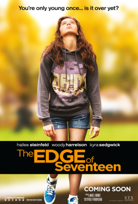
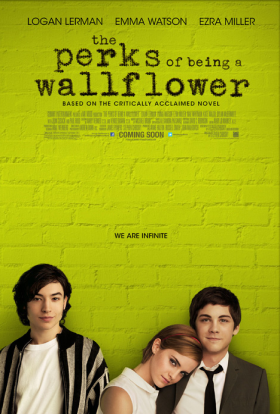
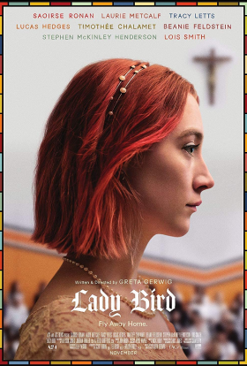
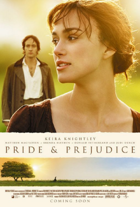
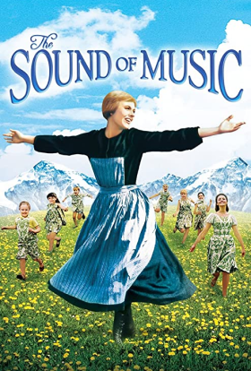

Everyone knows that growing up is hard, and life is no easier for high school junior Nadine (Hailee Steinfeld), who is already at peak awkwardness when her all-star older brother Darian (Blake Jenner) starts dating her best friend Krista (Haley Lu Richardson). All at once, Nadine feels more alone than ever, until an unexpected friendship with a thoughtful teen (Hayden Szeto) gives her a glimmer of hope that things just might not be so terrible after all.

Socially awkward teen Charlie (Logan Lerman) is a wallflower, always watching life from the sidelines, until two charismatic students become his mentors. Free-spirited Sam (Emma Watson) and her stepbrother Patrick (Ezra Miller) help Charlie discover the joys of friendship, first love, music and more, while a teacher sparks Charlie's dreams of becoming a writer. However, as his new friends prepare to leave for college, Charlie's inner sadness threatens to shatter his newfound confidence.

Sacramento, California, 2002. Christine "Lady Bird" McPherson (Saoirse Ronan) is in her final year of high school. She longs to leave Sacramento and go to college on the East Coast. However, her protective, obsessive mother, pessimistic at her chances, is determined to keep her in California, and ideally nearby to home. Lady Bird's final year of school will be one of discovery, new experiences and finding herself.

Elizabeth Bennet (Keira Knightley) lives with her mother, father and sisters in the English countryside. As the eldest, she faces mounting pressure from her parents to marry. When the outspoken Elizabeth is introduced to the handsome and upper-class Mr. Darcy (Matthew MacFadyen), sparks fly. Although there is obvious chemistry between the two, Darcy's overly reserved nature threatens the fledgling relationship.

A tuneful, heartwarming story, it is based on the real life story of the Von Trapp Family singers, one of the world's best-known concert groups in the era immediately preceding World War II. Julie Andrews plays the role of Maria, the tomboyish postulant at an Austrian abbey who becomes a governess in the home of a widowed naval captain with seven children, and brings a new love of life and music into the home.